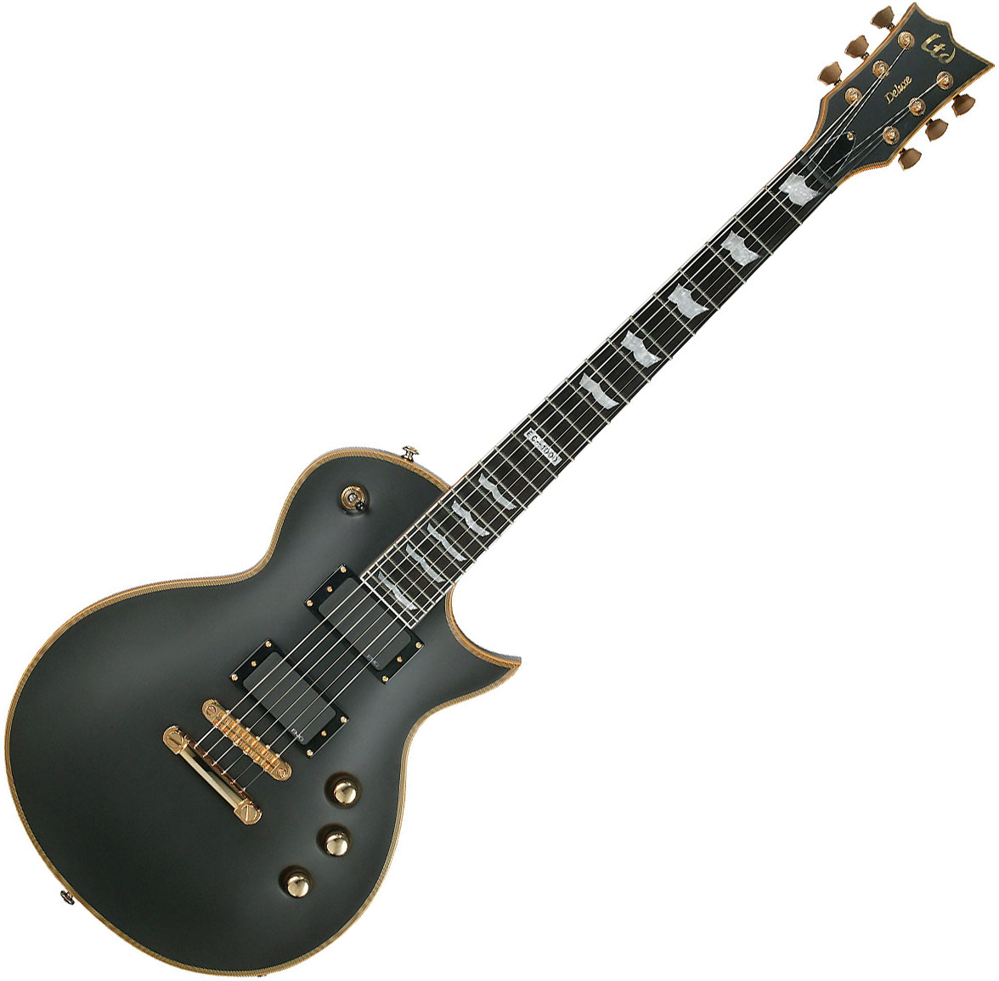
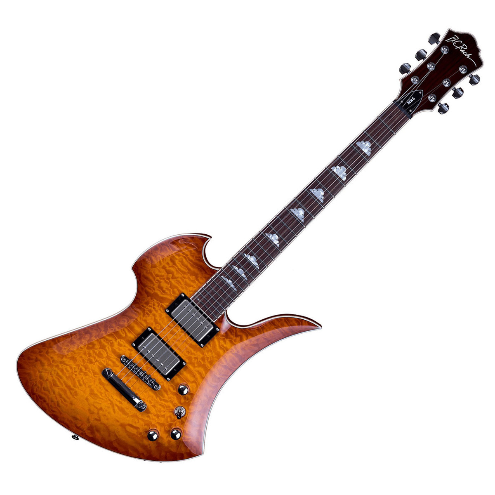
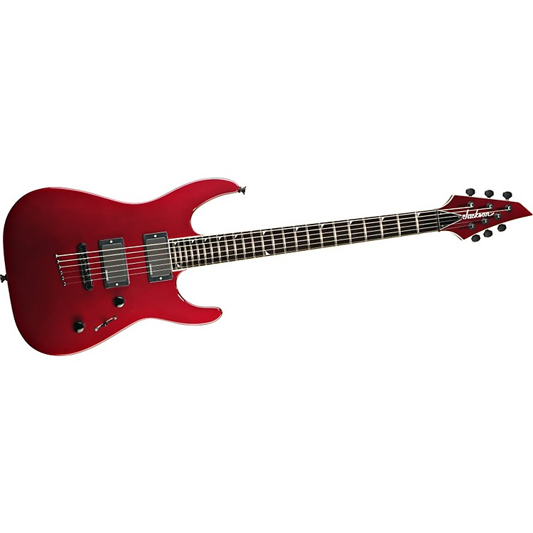
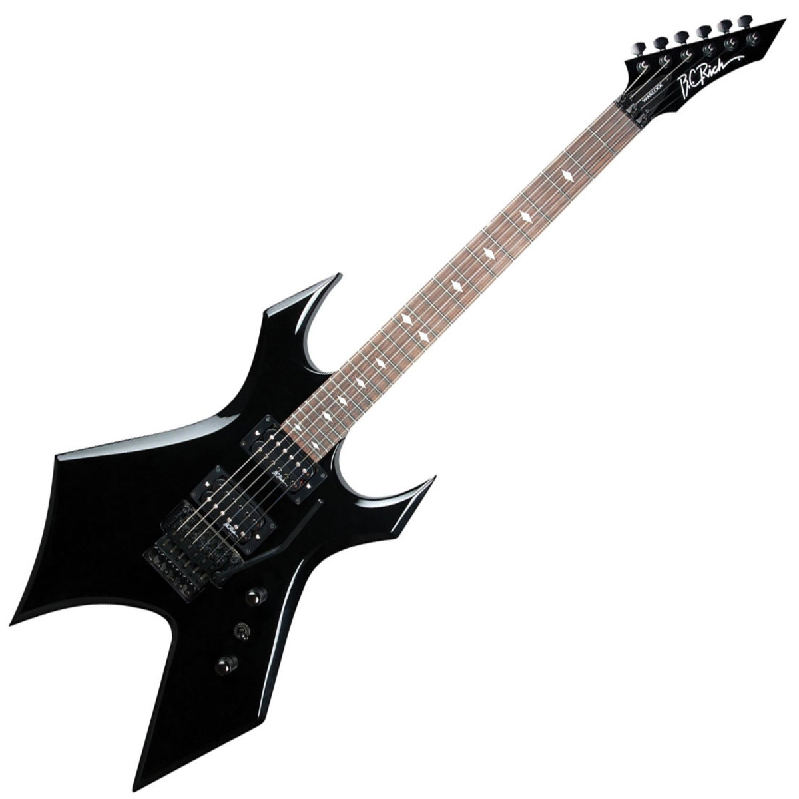

LTD EC 1000

Очень злая палка от LTD. Инструмент буквально создан для экстремальных жанров и
пониженных строев. Полностью из красного дерева, вклеенный гриф и палисандровой
накладкой. Офигенная инкрустация в форме флагов, золотая фурнитура, локовые колки и
желтая окантовка по всему корпусу — выглядит очень «делюкс».
Купить
B.C. Rich Mockingbird

Конструкция инструмента довольно оригинальна: сквозной гриф из трех кусков, дека из
красного дерева, украшенная шикарным волнистым кленом, накладка из черного дерева,
корейская сборка инструмента (которая в последнее время встречается всё реже, в целях
экономии производство всё чаще уходит в Тайвань, Индонезию и материковый Китай).
Мощнейшие датчики EMG, выдающие кучу зла на перегрузе.
Купить
Jackson SLSMG

Полностью шикарное красное дерево со сквозным грифом, как и на любом Солоисте. Родные
датчики EMG HZ-H3 были заменены предыдущим владельцем на EMG 81-85 с последующей
ампутацией некового (не понимаю, зачем), остался лишь 81. Струны сквозь корпус,
локовые колки держат строй долго. Широкий удобный гриф, подойдёт для любой музыки.
Купить
B.C. Rich Warlock

Шикарный американский инструмент по смешной цене. Торопитесь, на праздниках действует
отличная скидка. Гитара в родном кейсе. Рычаг в комплекте. На гитаре стоят самые
лучшие колки Sperzel. Всё полностью исправно, хорошее косметическое состояние в
особенности для её возраста. Мощный, напористый и богатый звук американского
инструмента заточенного под тяжёлую музыку.
Купить